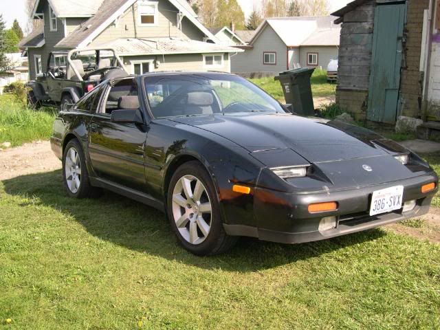

-
Would KYB Shocks be suitable for Eibach springs on a 87 NA Z31? How would it compare to the Tokico Blues? -
I've had that combo on a couple cars. here's one of them.

1988 300ZX Turbo, Shiro Special #760
1988 300ZX Turbo Automatic (wife's car)
1991 Hard-body 2WD
http://zccw.org/zccw/?page_id=1215 -
How did that setup work out for you? -
It was great for DD and occasional bouts of spirited driving on the mountain roads
1988 300ZX Turbo, Shiro Special #760
1988 300ZX Turbo Automatic (wife's car)
1991 Hard-body 2WD
http://zccw.org/zccw/?page_id=1215 -
I run tokico HPs (blues) with eibachs and love the combination. They have been on the car for years and have Branson Z Fest trip under their belt. I have never driven with KYBs so I have no comparison.
Great combination that make the car very streetable for everyday but also perform well under some extreme situations (Dramamine Cruise at BZF). Just be sure to replace bushings and other worn components.86na - BlueZ
Shiro #366 - Kouki Monster
85t - Mr Tickles -
I went to thezstore.com and tried to buy Eibach Springs + Full Tokico HP Blues but they said they were out of the Tokico's. It says on there that the KYB can't handle any lowering springs....is this true? Anyone know a better place to buy? I would prefer the Tokico blues maybe if the price is similar to thezstore…just to be sure -
I didn't have any problem with KYB's and Eibachs on two 87 turbo cars
1988 300ZX Turbo, Shiro Special #760
1988 300ZX Turbo Automatic (wife's car)
1991 Hard-body 2WD
http://zccw.org/zccw/?page_id=1215 -
I cant find Tokico HP Blues anywhere for the Z31. TheZstore.com told me they are out of them. Anywhere else they can be obtained? If not I'll go with the KYB's -
Try Shox.com
They competitive pricing and have served me well in the past86na - BlueZ
Shiro #366 - Kouki Monster
85t - Mr Tickles -
KYB's are great. I have them and Eibachs on my 87 2+2. Work fineSHAZAM! -
KYB's work great.
Tokico is no longer making the blues for Z31's, so finding them can be difficult. -
I have KYB+Eibach on an 86t; fairly well controlled and fun but nothing like ST + bilstein.Daily:
09 2.5SL Altima Grey
08 4.0SE Pathfinder 4x4 Grey
11 Ducati Diavel Carbon Red
Z31s:
88t Grey
86t Pewter

Copyright © 2006–. All rights reserved. Privacy Policy